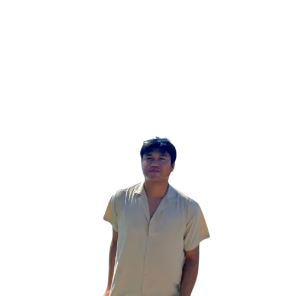

Header

Hey there! I'm Jenho Nacilla
Front-end Developer|
Tech Stack
HTML
CSS
JavaScript
React
TailwindCSS
MySQL
PostgreSQL
REST API
Git
Figma
Selenium
Docker
Python
MongoDB
Bootstrap
Node
PHP
WordPress
Notion
GitHub
Projects
Pomodoro For Rona
A productivity-focused Pomodoro timer built with vanilla JavaScript. Features customizable work and break intervals, session tracking, audio alerts, and a sleek dark UI optimized for focused work sessions.

E-Learning Landing Page
A modern landing page for an online learning platform featuring course categorization, featured courses showcase, instructor profiles, and interactive call-to-action sections.

Todo Web App
A task management application with add, edit, delete, and mark-complete functionality. Features local storage persistence, task filtering, and a clean responsive interface.

Entertainment Web App
A media streaming interface featuring movie and TV show browsing with category filtering, search functionality, and a responsive grid layout with hover previews and detailed information cards.
About Me
My Journey
The path I took towards becoming a web developer was initiated by my interest in the way websites were built. My initial dabbling with HTML and CSS turned into an obsession with crafting smooth and efficient online interactions. In the last twelve months, I have been fully engaged with the latest web technologies.
What Drives Me
It's this relationship between design and function that inspires me. I think good web apps have to be both attractive and easy to use. Each project I work on is a chance to make something that truly impacts people's lives.
My Approach
I am methodical in my problem-solving process, understanding the problem at hand, researching possible solutions, creating prototypes, and iterating. I am an advocate for writing clean code, designing with responsiveness in mind, and always learning. From fixing bugs to building new features, no task is too difficult.
Experiences
Software Developer Intern
NAP Solutions Inc.
Jan - June 2026
- Built web crawlers using Python and Selenium to extract valuable product and pricing data from multiple e-commerce platforms
- Developed and integrated a CAPTCHA solver to improve scraping reliability on protected pages
- Implemented AI-assisted HTML parsing to automatically detect page structures and extract key information with minimal manual rule updates
Freelance Web Developer
Upwork
2025 - Present
- Designed and developed responsive, high-performance websites for diverse small business clients across multiple industries
- Built custom WordPress themes and plugins from scratch, extending functionality to meet specific client requirements
- Managed complete project lifecycles from initial consultation and design to final deployment and ongoing support
Contact
Have a project in mind or simply want to connect? I'd be delighted to collaborate with you. Drop me a message below and I'll get back to you as soon as I can.
Download Resume